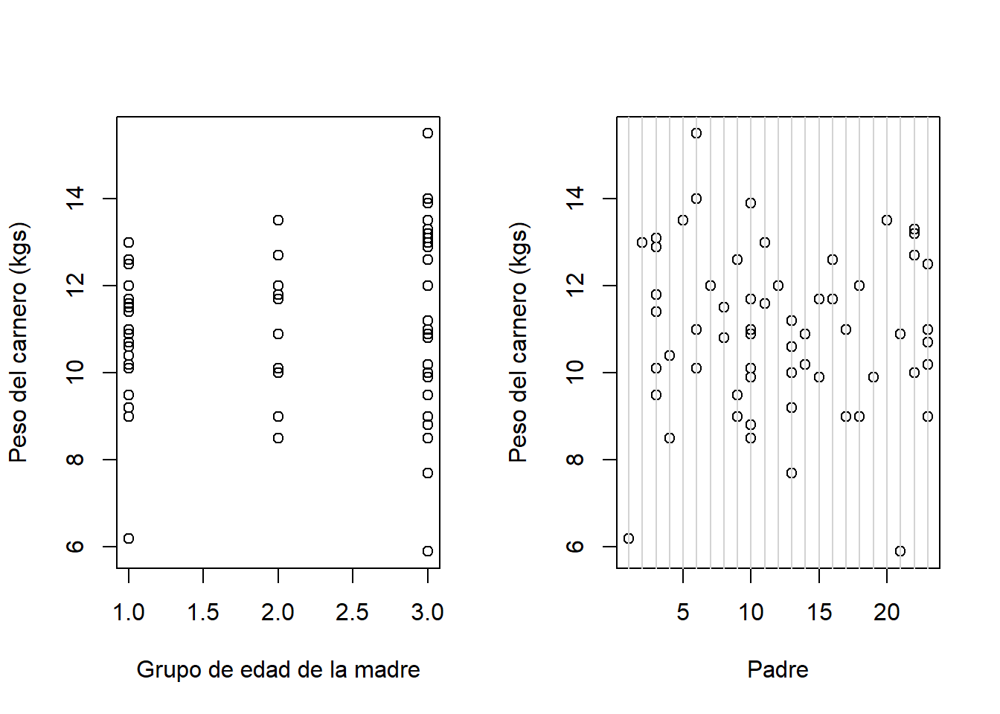

Capítulo 7 Modelo logístico
7.1 Casos de estudio
7.1.1 Mortalidad de escarabajos
Número de escarabajos muertos después de cinco horas de exposición a disulfuro de carbono gaseoso \((CS2mgl^{-1})\) en diversas concentraciones
| log.dosis | Escarabajos Total | Escarabajos Muertos |
|---|---|---|
| 1.6907 | 59 | 6 |
| 1.7242 | 60 | 13 |
| 1.7552 | 62 | 18 |
| 1.7842 | 56 | 28 |
| 1.8113 | 63 | 52 |
| 1.8369 | 59 | 53 |
| 1.8610 | 62 | 61 |
| 1.8839 | 60 | 60 |
¿Hay una relación entre la dosis y la mortalidad de escarabajos?
7.1.2 datos de escarabajos
logdose <- c(1.6907, 1.7242, 1.7552, 1.7842, 1.8113, 1.8369, 1.8610, 1.8839)
dead <- c(6, 13, 18, 28, 52, 53, 61, 60) # numbers dead
n <- c(59, 60, 62, 56, 63, 59, 62, 60) # binomial sample sizes
Datos=data.frame(logdose,n,dead)
plot(logdose,dead/n,xlab='log dosis',ylab='proporción de muertos',ylim=c(0,1),pch=16)
Variable respuesta \(y_i=\sum_{j=1}^{n_i}y_{ij}/n_{i}\): proporción de escarabajos muertos.
Distribución de probabilidad: binomial:
\[ f(n_iy_i;\pi_i)=\begin{pmatrix} n_i \\ n_iy_i \end{pmatrix} \pi_i^{n_iy_i}(1-\pi_i)^{(n_i-n_iy_i)}. \]
Función de enlace:
\[ log \begin{pmatrix} \frac{\pi_i}{1-\pi_i} \end{pmatrix}=\beta_0+\beta_1log\text{dosis}_i. \]
7.1.3 Bajo peso al nacer
Se busca identificar factores de riesgo asociados con el nacimiento de niños con bajo peso (< 2:5 kgs). datos: data(birthwt,package= 'MASS')
Muestra:189 madres atendidas en una clínica.
Variable respuesta: Bajo peso al nacer (1 si peso <2.5 kgs, 0 si peso$$2.5 kgs).
Posibles covariables:
age: edad de la madre (años).lwt: peso de la madre antes del embarazo (libras).smoke: estado de tabaquismo durante el embarazo (0 no, 1 si).ptl: historia de parto prematuro (número de casos).
Variable respuesta \(y_i\): bajo peso al nacer (0: no, 1: si)
Distribución de probabilidad: Bernoulli:
\[ f(y_i;\pi_i)=\pi_i^{y_i}(1-\pi_i)^{(1-y_i)}. \]
Función de enlace:
\[ log\begin{pmatrix} \frac{\pi_i}{1-\pi_i} \end{pmatrix}=\beta_0+\beta_1\text{age}_i+\beta_2\text{lwt}_i+\beta_3\text{smoke}_i+\beta_4\text{ptl}_i. \]
7.1.4 Estudio de teratología
Se quiere investigar los efectos de agentes químicos en el desarrollo fetal de ratas. datos: data(lirat,package = 'VGAM').
Muestra: 58 ratas hembras con dietas deficientes en hierro.
Variable respuesta: proporción de fetos muertos.
Posibles covariables:
grp: tratamiento (1: placebo, 2-4: diferentes concentraciones de inyecciones de suplementos de hierro)hb: nivel de hemoglobina.
data(lirat,package = 'VGAM')
par(mfrow=c(1,2))
#Proporcion de fetos muestos vs tratamiento
plot(lirat$grp,lirat$R/lirat$N,xlab="Tratamiento",ylab="Proporción de fetos muertos")
#Proporcion de fetos muestos vs Hemoglobina
plot(lirat$hb,lirat$R/lirat$N,xlab="Hemoglobina",ylab="Proporción de fetos muertos")
Variable respuesta \(y_i=\sum_{j=1}^{n_i}y_{ij}/n_i\): proporción de fetos muertos por hembra.
Distribución de probabilidad:binomial:
\[ f(n_iy_i;\pi_i)=\begin{pmatrix} n_i \\ n_iy_i \end{pmatrix} \pi_i^{n_iy_i}(1-\pi_i)^{(n_i-n_iy_i)}. \]
Función de enlace:
\[ log\begin{pmatrix} \frac{\pi_i}{1-\pi_i} \end{pmatrix}=\beta_0+\beta_1\text{grp}_{i1}+\beta_2\text{grp}_{i2}+\beta_3\text{grp}_{i3}+\beta_4\text{hb}_i. \]
7.2 Datos agrupados o datos no agrupados
Datos agrupados: Hay \(n_i\) observaciones que tienen los mismos valores de las covariables \(x_i\).
Datos no agrupados: Hay \(n_i=1\) (o muy pocas) observaciones por cada \(x_i\).
Las propiedades asintóticas de las inferencias para los datos no agrupados aplican cuando \(n \to \infty\).
Mientras que para datos agrupados, aplican cuando \(\sum_{i=1}^nn_i\to\infty\).
7.2.1 Datos agrupados
Para datos agrupados, \(D\) y \(X^2\) sirven para evaluar si el ajuste del modelo es bueno o no.
\(H_0\) indica que el modelo se ajusta bien a los datos, \(H_1\) lo contrario.
Si \(H_0\) es cierta (y \(\sum_{i=1}^nn_i\to\infty\)), entonces \(D\) y \(X^2\) siguen una distribución \(\chi^2\) con \((n-p)\) grados de libertad.
7.2.2 Datos no agrupados
Las distribuciones límite para \(D\) y \(X^2\) no aplican para datos no agrupados.
Tampoco para datos agrupados con \(n\) grande y con algunos \(n_i\) muy pequeños.
Se puede aproximar \(D\) y \(X^2\) agrupando \((\boldsymbol x_i,\hat{\boldsymbol y})\) por particiones del espacio de covariables o por particiones de \(\hat{\pi}\).
La falta de ajuste se puede hacer comparando el modelo propuesto contra modelos más generales.
7.3 Modelo logístico
Modelo:
\[ n_iy_i\sim\text{binomial}(n_i,\pi_i),\quad \text{donde} \quad \pi_i=g(\boldsymbol x_i\boldsymbol \beta). \]
Entonces: \(E(y_i|\boldsymbol x_i)=\pi_i\) y \(V(y_i|\boldsymbol x_i)=\pi_i(1-\pi_i)/n_i\).
Función de enlace logit: \(log\begin{pmatrix} \frac{\pi_i}{1-\pi_i} \end{pmatrix}=\boldsymbol x_i\boldsymbol \beta\).
Lo que implica que:
\[ \pi_i=g^{-1}(\boldsymbol x_i,\boldsymbol \beta)=\frac{exp(\boldsymbol x_i'\boldsymbol \beta)}{1+exp(\boldsymbol x_i'\boldsymbol \beta)}=\frac{1}{1+exp(-\boldsymbol x_i'\boldsymbol \beta)} \]
Aunque podemos utilizar otras funciones de enlace.
7.3.1 Funciones de enlace alternativas
Probit:
\[ \Phi(\pi_i)=\boldsymbol x'_i\boldsymbol \beta\quad \pi_i=\Phi(\boldsymbol x'_i\boldsymbol \beta), \]
donde \(\Phi(\cdot)\) es función acumulativa de la distribución normal estándar.
Log-log complementaria:
\[ \pi_i=1-exp[-exp(\boldsymbol x'_i\boldsymbol \beta)] \quad log[-log(1-\pi_i)]=\boldsymbol x'_i\boldsymbol \beta. \]
Log-log:
\[ \pi_i=exp[-exp(\boldsymbol x'_i\boldsymbol \beta)] \quad -log[-log(\pi_i)]=\boldsymbol x'_i\boldsymbol \beta. \]
“insertar grafico escarabajos funciones de enlace”